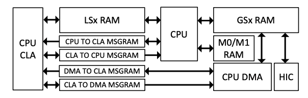

Memory Controller#
On C2000 real-time microcontrollers, the RAMs have different characteristics. These are:
Dedicated to the CPU: M0, M1 RAMs
Shared between the CPU and CLA: LSx RAMs
Shared between the CPU, DMA and HIC: GSx RAMs
Used to send and receive messages between processors: MSG RAMs
All these RAMs are highly configurable to achieve control for write access and fetch access from different controllers. All the RAMs are enabled with the ECC feature (both data and address). Some of the memories are secure memory as well. Each RAM has its own controller which takes care of the access protection/security related checks and ECC features for that RAM. Figure below shows the configuration of these RAMs.

CLA/DMA Modules
Not all C2000 devices have a CLA or a DMA. Refer to the Peripheral Reference Guide for a list of supported modules on your device.
ECC and Parity in RAM#
Error Correction Code (ECC) is a feature in memory that detects and corrects errors, and can notify the system when it is unable to correct data. The ECC scheme used is Single Error Correction Double Error Detection (SECDED). This scheme checks the bits of a data word as they are read. If one bit is altered, the single-bit error is corrected. If two bits are altered, the double-bit error is detected but not corrected. In the case were more than two bits are altered, the results are unclear.
For parity checking in memory, the even parity scheme is used. This means that when the total number of 1 bits are an even number, the parity bit will be set to 0. If the total number of 1 bits are an odd number, the parity bit will be set to 1. The purpose is to maintain an even number of 1’s in the data being accessed. If this total is not even, then an error has occurred.
ECC and parity cover data bits in memory and in the address. The calculation is done inside the memory controller itself, and the ECC and parity are written into memory with data. For example, for each 32-bit data there will be 3 7-bit ECC codes or 3 parity bits, two of which are for data and the third of which is for the address.
Error detection is done while reading data and executing program code from memory. For parity memory, only a single-bit error gets detected. For ECC memory a single and double-bit error get detected. The single-bit error for ECC is known as a correctable error, and the double-bit error is known as an uncorrectable error. Parity errors, double-bit ECC errors, and address ECC errors are considered uncorrectable. Single-bit ECC errors are correctable errors.
Correctable errors get corrected by the memory controller module, with the correct data given back as the read data. This is written back to memory to prevent a double-bit error because of another single-bit error at the same memory address. The correctable error count register increments for each correctable error. This can be used as a threshold to trigger an interrupt. The address for which the error occurs gets latched into the status register and a flag gets set.
For uncorrectable errors, a Non-Maskable Interrupt gets generated. The address where the error occurred gets latched into the status register and a flag gets set.
Access Type |
Error Found In |
Error Type |
Status Indication |
Error Notification |
|---|---|---|---|---|
Reads |
Data read from memory |
Uncorrectable Error (Single-bit error for Parity RAMs OR Double bit Error for ECC RAMs) |
Yes -CPUx/CPUx.DMA/CPUx.CLA1; CPU/DMA/CLA Read Error Address Register Data returned to CPUx/CPUx.DMA/CPUx.CLA1 is incorrect |
NMI for CPUx access; NMI for CPUx.DMA access; NMI to CPU for CPUx.CLA1 access |
Reads |
Data read from memory |
Single-bit error for ECC RAMs |
Yes - CPUx/CPUx.DMA CPU/DMA Read Error Address Register Increment single error counter |
Interrupt when error counter reaches the user programmable threshold for single errors |
Reads |
Address |
Address error |
Yes - CPUx/CPUx.DMA/CPUx.CLA1; CPU/DMA/CLA Read Address Error Register Data returned to CPUx/CPUx.DMA/CPUx.CLA1 is incorrect |
NMI to CPU for CPUx access; NMI to CPU for CPUx.DMA access; NMI to CPU for CPUx.CLA1 access |
Initializing RAM#
When the device first powers up, the RAM is in a state where all of its values are considered random. ECC is in RAM and is also considered to be in a random state. This will cause any read from RAM to raise a flag in the MEMORY_ERROR_REGS register unless RAM is initialized (all memory values will be set to 0). The MemCfg_initSection function clears out specified RAM sections that are provided as the parameter. Alternatively, the memset string library function is available, although this is not provided by TI and as such is on the user to verify that it clears the memory properly.
Dedicated RAM (Mx RAM)#
The C2000 devices has two dedicated RAM blocks: M0 and M1. M0 and M1 memories are small blocks of memory which are tightly coupled with the CPU. Only the CPU has access to these memories. No other peripherals (CLA, DMA or HIC) have access to these memories.
All dedicated RAMs have ECC and access protection (CPU write protection/CPU fetch protection) feature. Each type of access protection for each RAM block can be enabled/disabled by configuring the specific bit in the access protection register, allocated to each subsystem (DxACCPROT).
CLA-CPU Message RAM#
These RAM blocks can be used to share data between the CPU and CLA. The CLA has read and write access to the “CLA to CPU MSGRAM”. The CPU has read and write access to the “CPU to CLA MSGRAM.” The CPU and CLA both have read access to both MSGRAMs.
CLA-DMA Message RAM#
These RAMs blocks can be used to share data between CLA and DMA. The CLA has read and write access to the “CLA to DMA MSGRAM”. The DMA has read and write access to the “DMA to CLA MSGRAM”. The CLA and DMA both have read access to both MSGRAMs.
Feedback
Please provide any feedback you may have about the content within C2000 Academy to: c2000_academy_feedback@list.ti.com